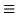

The globals class is used to refer to all state variables as one object, for the puposes of things like checkpoint restart. The object may be a subrange of cells, for example the cells that are represented on a particular processor. Methods exist to extract or replace subranges of cells. The index operator allows components of the arrays to be extracted symbolically. So if density

global_vars.iarrays[0], then g[density] returns g.iarrays[0].
//A class for storing the global variables used in the model
class global
{
public:
//origin cell and number of cells on this processor
int ocell, ncells, tstep;
// dimensions array and number of species in each cell
iarray dims, nsp, *coords;
// list of iarrays
iarray *iarrays;
//list of arrays
array *arrays;
//list of sparse_mats
sparse_mat *sparse_mats;
//lengths of above lists
int niarr, narr, nspars;
global();
/* i=no. of iarrays, a=no. of arrays and s=no. of sparse_mats */
global(int i, int a, int s);
global(global&);
global operator=(global);
~global();
/* get local equivalents of a global variable */
iarray& operator[](iarray& var);
array& operator[](array& var);
sparse_mat& operator[](sparse_mat& var);
/* return just the global variables belonging to cell, or a number
of cells cell, cell+1, ... cell+nc-1 */
global get_cell_vars(int cell, int nc=1);
//replace cells variables by those contained in vars
void put_cell_vars(global vars);
//add a cell into this global
void append(global vars);
//pack up the global data into a contiguous package
void packup(glue& buffer);
//unpack contiguous representation of global data
void unpack(glue& buffer);
};
The glue class is a helper class that represents the global
variables contiguously. It has four important members; char
*data and int size, which point to the contiguous
representation, and the number of bytes within that representation;
and the methods << and >>, which appends/extracts an
object into/from the representation. The packup and unpack
methods within the globals class convert between the glue
representation and the globals representation.
//A Class for grouping a whole bunch of binary things together
class glue
{
public:
char *data;
int size;
glue(int sz);
~glue()
void operator<<(int);
void operator<<(double);
void operator<<(iarray);
void operator<<(array);
void operator<<(sparse_mat);
void operator>>(int&);
void operator>>(double&);
void operator>>(iarray&);
void operator>>(array&);
void operator>>(sparse_mat&);
};
\begin{verbatim}
//Assemble a full set of global variables by combining data on each processor
void get_all_globals(global&);
collect the global variables on each processor onto processor 0.